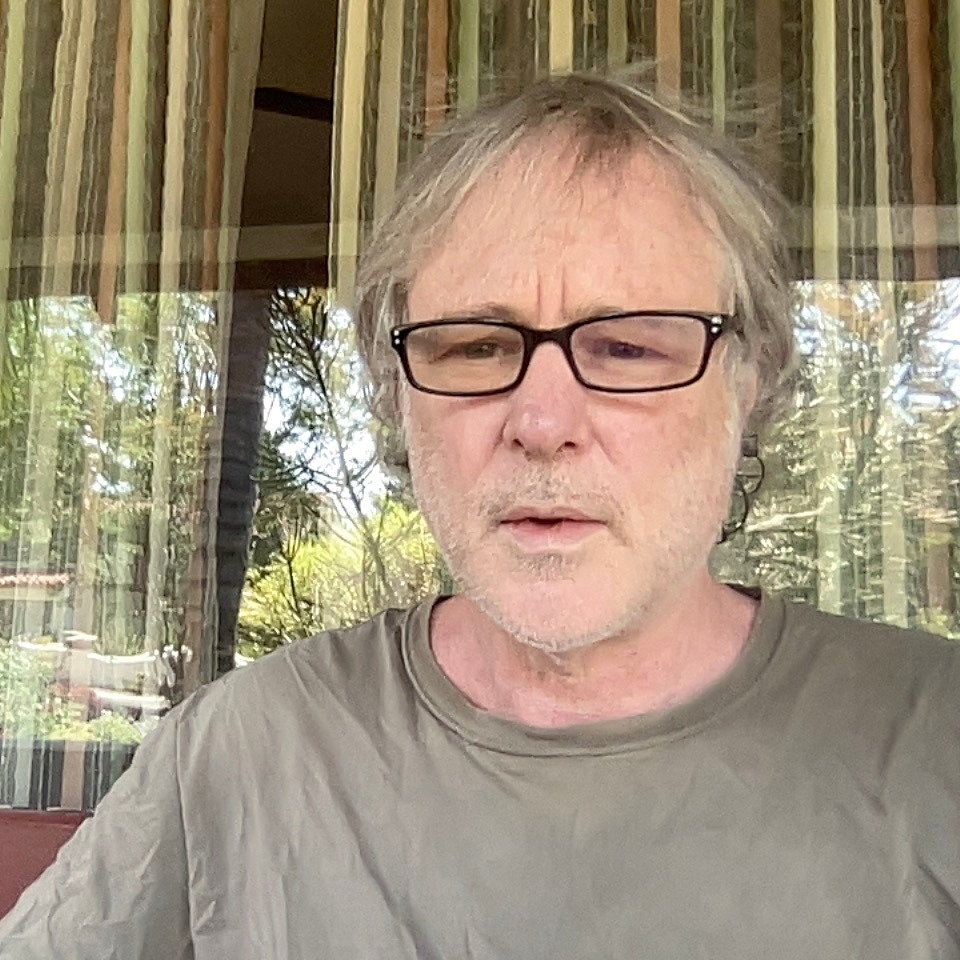

About Us
About Us

Ian Beardsley studied physics at The University of Oregon and worked in astronomy For four years at the state observatory, Pine Mountain Observatory in the high desert East of Bend, Oregon. His name appears on several papers in the Astrophysical Journal.
The Six-fold Basis of Reality by Ian Beardsley
Regarding The Six-fold Natu... by Ian Beardsley
Contacting ET 05 by Ian Beardsley
A Proposal for Six-fold Rea... by Ian Beardsley
A Theory for Six-fold Reali... by Ian Beardsley
Contacting ET 04 by Ian Beardsley
Six Fold Reality by Ian Beardsley
The Six-fold Nature of Real... by Ian Beardsley